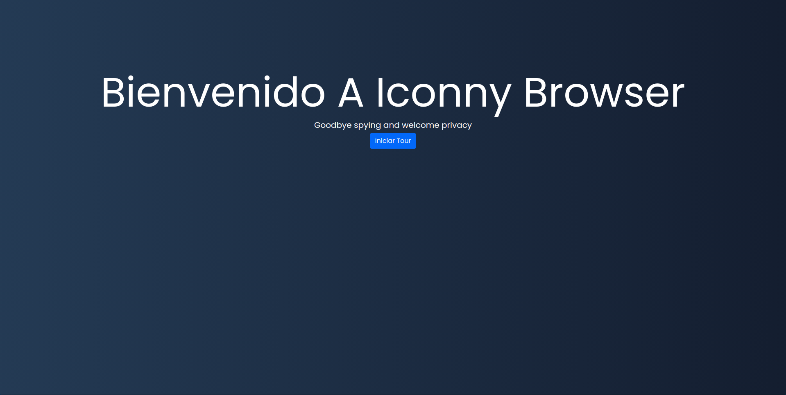
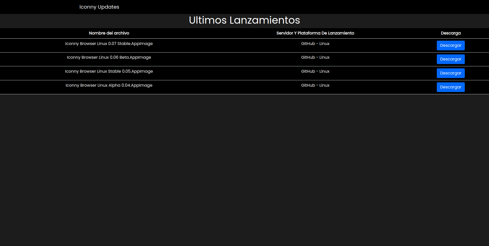
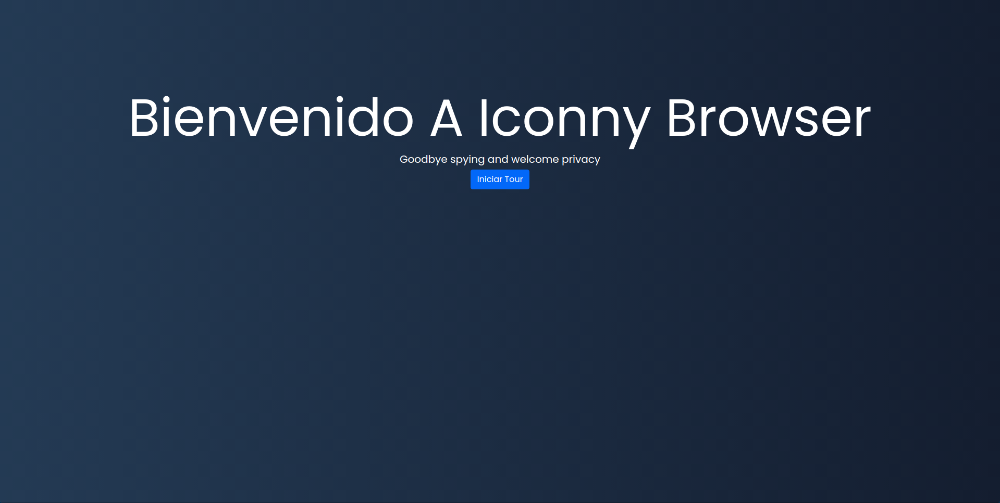
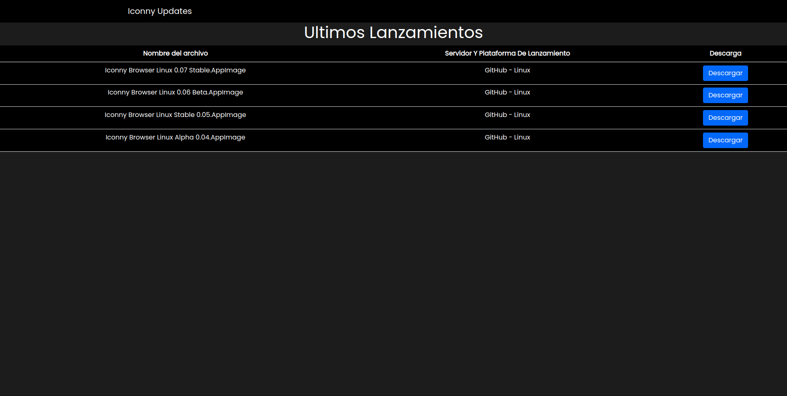

Iconny Browser Linux "Coffe Cake" 0.07
Escrito por Admin 11/01/2021

Nos complace anunciar que hemos sacado la version 0.07 Stable con nombre en codigo o mejor dicho nombre de desarrollo "Coffe Cake" ya sabemos que esto es mas normal en sistemas operativos
pero queremos que cada lanzamiento tenga un distintivo y sera el nombre de un postre que represente lo que trae la actualizacion pero entre otras cosas esta nueva version trae novedades mas interesantes que la antigua version 0.05 ademas de
terminar de pulir algunas funciones y el tiempro entre la version 0.05 a Coffe Cake (0.07) ha sido muy pequeño pero esto es porque las nuevas funciones de esta version se venian trabanjando desde la version 0.04
Novedades
Como primera novedad se mejoro el cambio entre Dark y Light Mode que esto ya venia desde la ultima beta
haciendolo mediante un formulario sencillo

Formulario
Como segunda novedad es que se incluye el modo divido con LasstPass y web panels de WDK que tambien ya se miraba desde la beta

Modo Dividido
Tercera novedad si incluye que en el about se puede mandar reportes mediante un boton de bugs que tambien ya estaba en la beta

Novedades en about
Cuarta novedad ahora se puede usar un basico pero eficiente asistente de configuracion esto especialmente para los que se confunda entre el dark y light mode

Pantalla del asistente
Quinta novedad se ha rediseñado por completo la pagina de inicio haciendo que se incluya los dos buscadores en la misma visata ademas de un reloj y se ha unificado el diseño
entre el dark y light mode de la pagina de inicio ademas que ahora cada vez que se abra una nueva pestaña en vez de cargar google cargara la pagina de inicio y se ha incluido
en los botones este blog
Nueva pagina de inicio
Sexta novedad se ha incluido un funcion para verificar las nueva versiones Stable y Betas y descargarlas

Gestor de versiones
Ademas un cambio que no puede estar en las seccion de cambios menores es que para conseguir mayor estabilidad ya no se usara la version 1.03 WDK que tenia soporte hasta el 25/01/2021
para esto se deberia cambiar la version 1.04 que tendria soporte hasta el 25/02/2021 entonces se decidio que para evitar problemas se usara la version 1.01 LTS que solo recibe soporte de
correciones este tendra soporte hasta el 27 de abril del 2021 aunque no se recibira nuevas caracteristicas si abra mayor estabilidad en el navegador
Otros cambios menores :
haciendolo mediante un formulario sencillo
Como segunda novedad es que se incluye el modo divido con LasstPass y web panels de WDK que tambien ya se miraba desde la beta
Modo Dividido
Tercera novedad si incluye que en el about se puede mandar reportes mediante un boton de bugs que tambien ya estaba en la beta
Novedades en about
Cuarta novedad ahora se puede usar un basico pero eficiente asistente de configuracion esto especialmente para los que se confunda entre el dark y light mode

Pantalla del asistente
Quinta novedad se ha rediseñado por completo la pagina de inicio haciendo que se incluya los dos buscadores en la misma visata ademas de un reloj y se ha unificado el diseño
entre el dark y light mode de la pagina de inicio ademas que ahora cada vez que se abra una nueva pestaña en vez de cargar google cargara la pagina de inicio y se ha incluido
en los botones este blog
Nueva pagina de inicio
Sexta novedad se ha incluido un funcion para verificar las nueva versiones Stable y Betas y descargarlas

Gestor de versiones
Ademas un cambio que no puede estar en las seccion de cambios menores es que para conseguir mayor estabilidad ya no se usara la version 1.03 WDK que tenia soporte hasta el 25/01/2021
para esto se deberia cambiar la version 1.04 que tendria soporte hasta el 25/02/2021 entonces se decidio que para evitar problemas se usara la version 1.01 LTS que solo recibe soporte de
correciones este tendra soporte hasta el 27 de abril del 2021 aunque no se recibira nuevas caracteristicas si abra mayor estabilidad en el navegador
Otros cambios menores :
Esperamos que les guste estos nuevas funciones y cambios
Atte Administrador Descargar La Version 0.07 Stable AppImage
Ver Release En Github